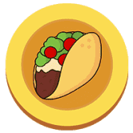 Taco Finance DeFi 最热门的趋势 Yield Farming 回归币安智能链（BSC）！ 然而，这一次，它以更低的交易费用和更快的速度回归。 Taco Finance ($TACO) 是新一代自动做市商 (AMM) 的一部分，具有许多新
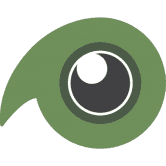 Tadpole Finance Tadpole Finance 是一个 DeFi 借贷协议。 用更专业的术语来说，它是一种算法货币市场协议。 你可以把它想象成一个开放的金钱市场。 Tadpole 与其他 DeFi 项目的区别在于，任何人都可
TaiChiDao $TAC 是一种去中心化的储备货币，不受挂钩约束。 这是一个非常成熟的项目，拥有超高的稳定收益，你值得拥有！ 欢迎来到 defi2.0 世界。比 SquidGodFinance 更强大。 Discord 上的大奖励
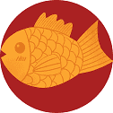 Taiyakiswap Taiyakiswap 是一款运行在币安智能链和 Pancake Swap 交易所上的收益农业 dapp，具有很酷的新功能，让您赚取 TAI 代币并享受高 APR。 这个项目背后的想法是为保守的农民创
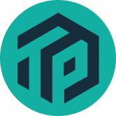 Take Profit TakeProfit 是运行在 BSC（币安智能链）生态系统上的 DeFi 服务。我们的目标是通过支付按稳定币、低风险币、中风险币和高风险币分组的代币范围内的利润来提高您的
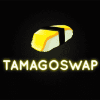 TamagoSwap Finance TamagoSwap 是 Polygon 网络上的新一代收益农场，它将包含 Equity Vault、自动可变排放率和 NFT，我们相信这将有助于提供一个具有可持续和弹性排放的农场，这将极大地
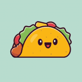 Taquito Finance 一个多层去中心化的收益农场交易所，运行在 Polygon 链上； PancakeSwap 的一个叉子。 这是我们公司未来的第一个收益农场项目，因此我们承诺始终与投资者和社区保持透明和
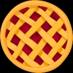 Tart Finance Tart Finance 是币安智能链上全新的去中心化交易所，被称为第二代收益耕作机制，可通过 TIMELOCK 合约在发布时以可持续且可盈利的耕作收益实现永久价格上涨！ 主要特点 ：
Tartarus Finance Tartarus 是 Fantom 区块链上 IDO 的去中心化筹款平台。 为了为寻求早期访问 DeFi 中经过审查的项目的投资者提供一个简单易用的平台，Tartarus 在这里通过以公平和智
Taste Finance Taste Finance (Taste) 是具有通缩治理代币模型的下一代自动做市 (AMM) 去中心化交易所。 我们是您在币安智能链和 Pancakeswap 交易所上运行的首选收益农场，还有许多其他功能可以让您赚
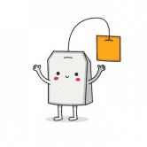 Teabags Tea Bags Finance 是一个去中心化的农场收益项目，运行在币安智能链和 Pancake Swap 交易所。 将一个人的坚果插入另一个人（无论男女）的嘴里，通常是在他们睡觉的时候。 可能
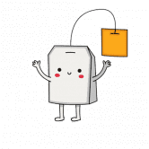 Teabags Tea Bags Finance 是一个去中心化的农场收益项目，运行在币安智能链和 Pancake Swap 交易所。 将一个人的坚果插入另一个人（无论男女）的嘴里，通常是在他们睡觉的时候。 可能
Team Finance TrustSwap 通过锁定使 DeFi 更安全 TrustSwap 是一个去中心化的应用程序，它允许区块链项目将其 ERC20 代币和 LP 流动性代币锁定在非托管、定时发布的智能合约保险库中。 为什么要锁
TEAsWAP.ART Token 茶交换。 Art（“TSA”）现在是您欣赏令人难以置信的创新 NFT 艺术的家园。我们邀请您一起潜入这个数字启蒙的新时代。 TSA 是一个新的数字 NFT 艺术跨链市
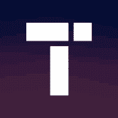 Tectonic Tectonic 是 Cronos 生态系统的第一个借贷平台，由 TONIC 治理令牌提供支持。 Tectonic 是您获得被动收益和获得即时支持贷款的门户 ICYMI，$TONIC 质押功能又有更新了！
Tedd Finance Tedd.Finance 是运行在 Polygon (MATIC) 链上的 DeFi 农业 + 区块链游戏协议。 该项目旨在将所有高利润的农业机械师连接到最便宜和最快的网络上的一步式收益农业聚合器。 重要提示👇🏻
Teddy Cash Teddy Cash 是一种去中心化借贷协议，在 Avalanche 上提供无息贷款。 使用 Teddy Cash 在您的 AVAX 上免费借入高达 90% 的利息。无论我们是否有机会讨论 TSD，这是一个需要关注的重要
TeddyDefi TeddyDefi 是由 BSC、Polygon 和 Avalanche 支持的即将推出的可持续去中心化收益农业和收益聚合协议。 我们的重点是为愿意支持我们成为可用的最佳 DEFI 协议之一的投
Templar DAO Templar DAO 是币安智能链 (BSC) 上 DeFi 2.0 中的协议拥有的流动性 (POL)。 该协议由 TEM 代币提供支持，该代币由 Templar 国库中的一篮子资产（如 BUSD、LP 等）提供支持，
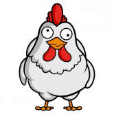 TendieSwap 什么是 TendieSwap？ 除了提供我们自己的 DEX、质押和农业协议外，TendieSwap 还专注于彻底改变博彩行业。 TendieSwap 是一种非托管预测协议
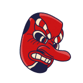 TenguSwap 8 月 23 日：预售开放 48 小时（区块 #18315007） 8 月 26 日：交易所启动（区块 #18444607） 8 月 29 日：农业启动（区块 #18574207）
Tequila Farm Tequila Farm 是一个简单的单产农场，使用通用版本的 SpiritSwap MasterChef（它本身基于 PancakeSwap 的厨师）构建。 快来xDai上喝TEQUILA吧！很高兴我们现在可
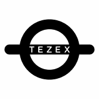 TEZEX TEZEX 是一个 Tezos 流动性交易所，通过链间和链内代币交易扩大流动性。 TEZEX Bridge 支持 Tezos 代币与其他区块链（如以太坊）的代币之间的跨链代币交换——也就是说，以太坊
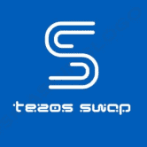 TezosSwap TezosSwap 使普通用户和社区能够像在 Facebook 或 WhatsApp 上与朋友联系一样快地创建自己的 defi 服务。 这包括创建和定义他们自己的代币、质押机制、农业和流动资金池等。首先通过
Thales Thales 是目前部署在 Optimism 上的以太坊协议，允许创建点对点的派利互惠货币市场。 parimutuel 市场是将抵押品放置在一个共享池中的市场，直到市场结算事件发生后才能确定对
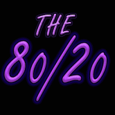 The 80/20 此代币的持有者在推荐他人和与合约互动时会收取股息、奖金和佣金。 80/20 于 2020 年 10 月首次在以太坊网络上推出，已处理超过 1000 个 ETH。 然而，由于高昂的汽油
The Crypto Prophecies Kingdom Vault Kingdom Vault 是存储在 Crypto Prophecies 及其他世界中获得或投资的财富的地方。 Kingdom Vault 奖励选择将代币锁定在其中的社区成员。 王国金库将有多种金库可供选择； 一些金库专注于提供
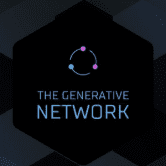 The Generative Network 生成网络是 Fantom Opera 上最简单的投资选择之一。 选择您想要永久收益的资产，存入该货币，永久领取高达 3% 的 APY！ 推荐奖励和精选代币生成器具有随交易量触发
The Grand Banks Narwhalswap 团队建立了 Grand Banks 以使单产农业回归基础。没有进入障碍，没有多个农业步骤。如果您在 Moonswap 保险库上质押，请退出并等待。🚀Moonswap 今天世界标准时
The RED Pill Dao $TRP 是在币安智能链上推出的 OHM 分叉 BEP-20 代币。这将是同类 FOHMO（基于粉丝的 OHM 组织）代币中的第一个。 $TRP 的目的是为人们提供一种安全稳定的替代储备加密
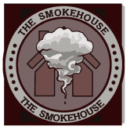 The Smokehouse 什么是熏制房？ 我们是一个收益农业和 Staking 协议，将专注于两件事，即高 APY 和安全性。最近地毯太多了，所以我们的团队希望为每个人提供一个安全的环境来开展
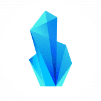 The Stone Finance Stone Finance 结合了 Fantom Opera 网络原生的去中心化收益协议，允许用户以高达 80.000% 的 APR 抵押他们的资产。目前，Stone Finance 为用户提供了 3 个主要功能来赚取被动收入：St
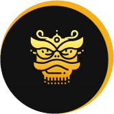 The Story of Draco Draco 的故事是一个全新的 DeFi 项目，由 Fantom 网络上经验丰富的开发团队设计，具有许多功能，例如 Draco 理论、灾难、银行、金库、Staking、DEX、Yield
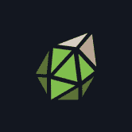 Thetanuts THETANUTS 协议通过加密结构产品帮助参与者获得可持续的收益。 Thetanuts Finance 是一个多链结构化产品协议，销售自动化期权策略，为用户产生多样化的高有机收益。 Thetanuts Finance 是一种
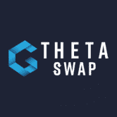 ThetaSwap ThetaSwap 是第一个建立在 Theta 区块链上的去中心化交易所，使用基于类似于 UniSwap 的自动做市商逻辑构建的开源智能合约系统。 它允许用户以无需信任、非托管的方式交换他
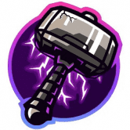 Thoreum Thoreum V2 是： 无忧无虑：您在 BSC 上购买并放松。 持有赚取：每次用户买卖时，6.5% 的税收分配给 BUSD 的现有持有者，6.5% 的税收累积在 Thoreum 国库中。 超级通缩：
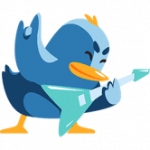 Thunderbird Thunderbird 是一个完全去中心化的单产农业平台，由 DAO Thunderbird（一个去中心化的自治组织）管理，并由币安智能链区块链提供支持。 平台提供了一套